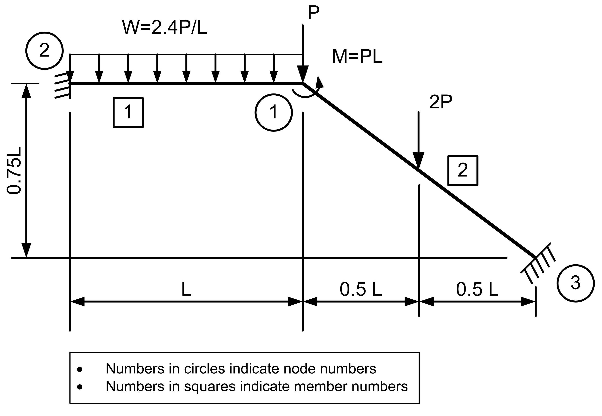

User Manual¶
Units¶
Data input can be in any set of consistent units. Thus, if lengths are in \(m\), then cross-section area must be in \(m^2\). Similarly,, if forces are in \(kN\), then \(E\) must be in \(kN/m^2\).
Input Formats¶
Data can be input to pf.py in one of the following ways:
- As data, mostly in the form of a series of
numpy.ndarrays with specific variable names, in a Python script. This data must subsequntly converted into Pandas dataframes usingpf.data2df()function. - As Pandas DataFrames with specific variable names, column names and column
dtypes. - As a TOML file with specific names for variables
- As an sqlite3 database with specific names for tables and specific schema for each table
Irrespective of how the data is input, the entire input data is finally represented in the form of Pandas DataFrames with the specified names, column names and data types.
In the description below, np.ndarray[(:, 2), np.float_] implies a numpy array with as many rows as required (:) and all elements of type np.float_. As an example a coordinates of a 2 node structure could be defined as follows:
xy = np.array([ [0, 0], [5, 0] ], dtype=np.float_)
which has 2 rows and elements are stored as floating point numbers.
An empty matrix, such as when no nodal loads are applied on the structure should be resresented as:
jtloads = np.array([], dtype=np.float_)
Input Data¶
The names of variables and their column names and data types are as follows:
title: stris a string specifying a user defined title for the problemxy: np.ndarray[(:, 2), np.float_]are the(x, y)coordinates of the nodes of the plane frame. Row index + 1 is the node number. In a Pandas DataFrame, the column names must bexandy. Data types of both columns must benp.float_.conn: np.ndarray[(:, 3), np.int_]is the connectivity matrix for the members of the structure. Row index + 1 is the member number. Columns 1 and 2 represent the origin noden1and far noden2of the member and column 3 represents the material property id, to be defined later. In a Pandas DataFrame, the column names arenode1,node2,mprop. All columns are of typenp.int_.bc: np.ndarray[(:, 4), np.int_]is the zero boundary condition matrix specifying the support conditions. Row index + 1 is the support constraint for a constrained node. Column 1 specifies the node id to which the constraints are to be applied. Columns 2, 3 and 4 represent the constraints to be applied to theux,uyandrzdegrees of freedom of the node, whereuxanduyare linear displacements along the globalxandyaxes andrzis the rotatiion about the globalzaxis. Constraint code1implies the corresponding degree of freedom is constrained (zero displacement) and1implies the corresponding degree of freedom is unconstrained (non-zero unknown displacement that needs to be determined). For example, if node number 1 is a fixed support, it would be represented by the row2 1 1 1and if node number 3 is a hinged support, it would be repesented as3 1 1 0. Constraints for a node need be specified only when one or more of its degrees of freedom are constrained. Remaining nodes are considered unconstrained.mprop: np.ndarray[(:, 3), np.float_]is a matrix representing each unique material property. Row index + 1 is the material number. Column 1 repesents the modulus of elasticityE, column 2 repesents the cross-section areaAand column 3 repesents the second moment of area about the axis of bendingIz. In a Pandas DataFrame, the column names should beE,AandIz. All columns are of typenp.float_. When multiple members have the same material properties, it need be defined only once and the material property id must be indicated in the connectivity matrixconndefined above.jtloads: np.ndarray[(:, 4), np.float]are the nodal loads, with reference to global axes. Row index + 1 is the nodal load number. Column 1 represents the number of the node to which the nodal load must be assigned. Columns 2 and 3 repesent the magnitudes of thexandycomponents of the load applied at the node and column 3 repesents the moment applied about thezaxis at the specified node. Each nodal load must be defined independently, even when it may be identical to another load applied on a different node. In a Pandas DataFrame, the columns names must benode,Px,Py,Mz. Data type of the first column must benp.int_and columns 2 to 4 must benp.float_. When defining joint loads as anumpyarray, all columns are defined asnp.float_and the functionpf.data2df()will automatically ensure the proper column names and data types. Note: If no nodal loads are applied on any of the nodes of the structure, it must be an empty array or DataFrame.memloads: np.ndarray[(:, 7), np.float_]are the applied member actions, with reference to member axes. The negative values of the applied member end actions, transformed to global axes, will be taken as the equivalent joint loads in assembling the load vector. Row index + 1 is the member load number. Column 1 represents the number of the member to which the nodal load must be assigned. Columns 2, 3, 4 repesent the magnitudes of the loads applied at the origin node of the member and columns 5, 6, 7 represent the loads applied at the far node of the member. Loads at each node follow the sequencePx,Py,Mz. Each member load must be defined independently, even when it may be identical to another load applied on a different member. In a Pandas DataFrame, the columns names must bemember,Px1,Py1,Mz1,Px2,Py2,Mz2. Data type of the first column must benp.int_and columns 2 to 7 must benp.float_. When defining member loads as anumpyarray, all columns are defined asnp.float_and the functionpf.data2df()will automatically ensure the proper column names and data types. Member loads must be computed as the negative of the fixed end reactions produced in the member when subjected to the specified loads (may be one or more). These must be computed by the user and the program at present does not calculate these automatically for the common types of loads noramlly encountered in practice. Note: If no loads are applied on any of the members of the structure, it must be an empty array or DataFrame.
Example¶

Units¶
Lengths are in inches and forces are in kips. Therefore, area must be in \(\text{in}^2\), \(I_z\) must be in \(\text{in}^4\) and \(E\) in \(\text{kips}/\text{in}^2\).
Coordinate Axes¶
Let the global \(x\) axis be horizontal and passing through node 3 and \(y\)axis be vertical and passing through node 1. Then, the global \(z\) axis will be perpendicular to the plane of the frame and pointing toward the observer.
Each member has a member axis, with the member \(x\) axis has its origin at the origin node of the member and is positive towards the far node of the member. The member \(y\) axis is such that the member \(z\) axis must point in the same direction as the global \(z\) axis. Thus, considering a horizontal member (that is, member parallel to the global \(x\) axis) with its left end as the origin node, member \(y\) axis must point upwards, so the member \(z\) axis is parallel to the global \(z\) axis. However, for the same member, if the right node is considered the origin node, the member \(y\) axis, at the right node, must point downward to ensure that the member \(z\) axis points towards the observer (as per the right hand rule). This applie even when the member is
It is important to understand the orientations of the global and member axes as they are required when computing nodal loads and member end actions due to loads applied on the members.
Member End Actions¶
\(P=10~\text{kips}, L=100~\text{in}, E=10000~\text{ksi}, A = 10~\text{in}^2, I_z = 1000~ \text{in}^4\)
Member end force calculation¶
Member 1¶
\(M_1 = -M_2 = \frac{0.24 \times 100^2}{12} = 200~\text{kips-in}\)
\(R_1 = R_2 = \frac{0.24 \times 100}{2} = 12~\text{kips}\)
Member 2¶
In global axes, the reactions are:
\(M_1 = -M_2 = \frac{20 \times 100}{8} = 250~\text{kips-in}\)
\(R_1 = R_2 = \frac{20}{2} = 10~\text{kips}\)
Origin node is the left node, \(x\) axis goes from origin node to the far node and \(y\) axis is upwards so as to maintain the \(z\) axis perpendicular to the paper and coming out towards the reader, same as the global \(z\) axis.
Resolving the reactions along the member axes, we get: \(\theta = \tan^{-1} \left( \frac{75}{100} \right) = 36.8699~\text{degrees}, \cos \theta = 0.8, \sin \theta = 0.6\).
\(R_{x1} = R_{x2} = -6~\text{kN}, R_{y1} = R_{y2} = 8~\text{kN}\)
Note: Ideally, all such calculations must be performed by the program and not the user, but that is a goal for the future.
Node Cooridinates¶
Name of the variable: xy. Pandas column names: x, y. Data types of both columns: np-float_.
x |
y |
|---|---|
| 100.0 | 75.0 |
| 0.0 | 75.0 |
| 200.0 | 0.0 |
Member Connectivity¶
Name of the variable: conn. Pandas column names: member, node, node2, mprop. Data types of all coumns is np.int_.
member |
node1 |
node2 |
mprop |
|---|---|---|---|
| 1 | 2 | 1 | 1 |
| 2 | 1 | 3 | 1 |
Note: Origin node of member 1 is defined as node 2 and far node as node 1, Therefore, the member \(x\) axis is parallel to the global \(x\) axis and points in the same direction. Similarly, member \(x\) axis of member 2 has its origin at node 1 and is inclined to the global \(x\) axis at an angle \(\theta = 36.8699\) degrees and pointing downwards.
Boundary Conditions¶
Name of the variable: bc. Pandas column nmaes: node, ux, uy, rz. Data types of all columns: np.int_.
Supports at both the nodes 2 and 3 are fixed. Thus all displacements, \(u_x, u_y, r_z\) are restrained.
node |
ux |
uy |
rz |
|---|---|---|---|
| 2 | 1 | 1 | 1 |
| 3 | 1 | 1 | 1 |
Material Properties¶
Name of variable: mprop. Pandas column names: E, A, Iz. Data type of all columns: np.float_.
Both members of this structure have the same material property and therefore we need only one material property to define this structure.
E |
A |
Iz |
|---|---|---|
| 10000 | 10 | 1000 |
Nodal Loads¶
Name of variable: jtloads. Pandas column names: node, Px, Py, Mz. Data type of columns: np.int_, np.float_, np.float_, np.float_.
node |
Px |
Py |
Mz |
|---|---|---|---|
| 1 | 0 | -10 | -1000 |
Note: Sign convention for nodal loads is as per the global axes. Thus, \(P_x, P_y\) are positive if they have the same sign as the global \(x\) and \(y\) axes, respectively. Sign of \(M_z\) is as per the right hand rule. If direction of \(M_z\) is the same as the direction of the fingers of the right hand when holding the global \(z\) axis with the right hand with the thumb pointing in the same directioin as the global \(z\) axis.
Member End Actions¶
Name of variable: memloads. Pandas column names: member, Px1, Py1, Mz1, Px2, Py2, Mz2. Data types of columns: np.int_, np.float_, np.float_, np.float_, np.float_, np.float_, np.float_.
member |
Px1 |
Py1 |
Mz1 |
Px2 |
Py2 |
Mz2 |
|---|---|---|---|---|---|---|
| 1 | 0 | 12 | 200 | 0 | 12 | -200 |
| 2 | -6 | 8 | 250 | -6 | 8 | -250 |
Sample Python Script to Use msa.pf¶
# example01.py
import numpy as np
from msa import pf
def input_data(prob: str):
# Weaver & Gere
title = "Plane Frame (Weaver and Gere)"
xy = np.array([[100.0, 75.0], [0.0, 75.0], [200.0, 0.0]])
conn = np.array([[2, 1, 1], [1, 3, 1]], dtype=np.int_)
bc = np.array([[2, 1, 1, 1], [3, 1, 1, 1]], dtype=np.int_)
mprop = np.array([[1.0e4, 10, 1.0e3]], dtype=np.float_)
jtloads = np.array([[1, 0, -10.0, -1000.0]], dtype=np.float_)
memloads = np.array(
[[1, 0.0, 12.0, 200.0, 0.0, 12.0, -200.0], [2, -6.0, 8.0, 250.0, -6.0, 8.0, -250.0]], dtype=np.float_
)
return title, xy, conn, bc, mprop, jtloads, memloads
def echo_input(title, xy, conn, bc, mprop):
pf.print_title(title)
pf.print_mat("\nJoint Coordinates\n", xy)
pf.print_mat("\nMember Connectivity\n", conn)
pf.print_mat("\nZero Boundary Conditions\n", bc)
pf.print_mat("\nMember Properties\n", mprop)
if __name__ == "__main__":
title, xy, conn, bc, mprop, jtloads, memloads = input_data()
pf.echo_input(title, xy, conn, bc, mprop)
df_xy, df_conn, df_bc, df_mprop, df_jtloads, df_memloads = pf.data2df(
xy, conn, bc, mprop, jtloads, memloads
)
pf.main(df_xy, df_conn, df_bc, df_mprop, df_jtloads, df_memloads)
Execute the above script with:
>python example01.py